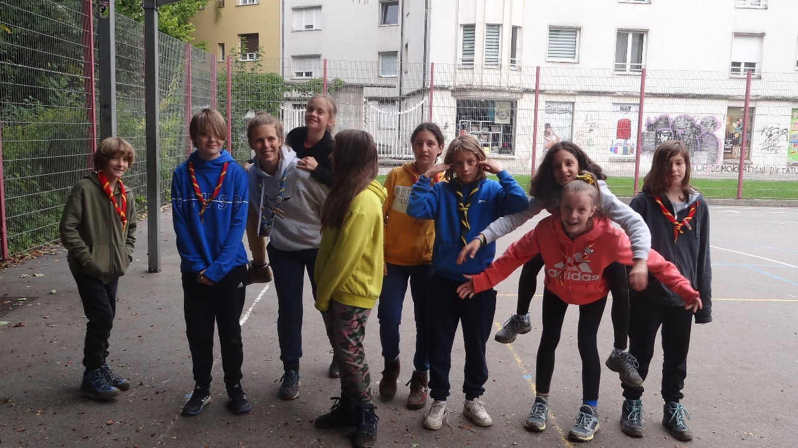

Dobrodošle na lovu na zaklad! V njem boste s pomočjo svojega neprekosljivega taborniškega znanja opravljale različne vrste nalog, ki vas bodo vodile do "zaklada". Hura? Hura!
Stvar je sila enostavna. Pri vsaki rešeni nalogi boste dobile neko kodo - bodisi že preko same naloge, bodisi vam jo bova, ko nalogo uspešno opravite, sporočila midva s Tinkaro. Brez skrbi, vse bo pisalo v navodilu posamezne naloge.
Ko uspešno pridete do kode lahko kliknete na povezavo na dnu strani, ki vas bo peljala na stran, kjer boste vpisale kodo, ki ste jo ugotovile. Če bo vpisana koda pravilna, se bo potem na strani pojavil link do naslednje naloge.

Kot vam je Tinkara že nakazala zgoraj, je 1. naloga zelo enostavna. Najdi svojo rutko, obesi si jo okoli vratu in pripravljeni smo na začetek. Ko bomo vsi pripravljeni bo Gašper povedal geslo za nadeljevanje.